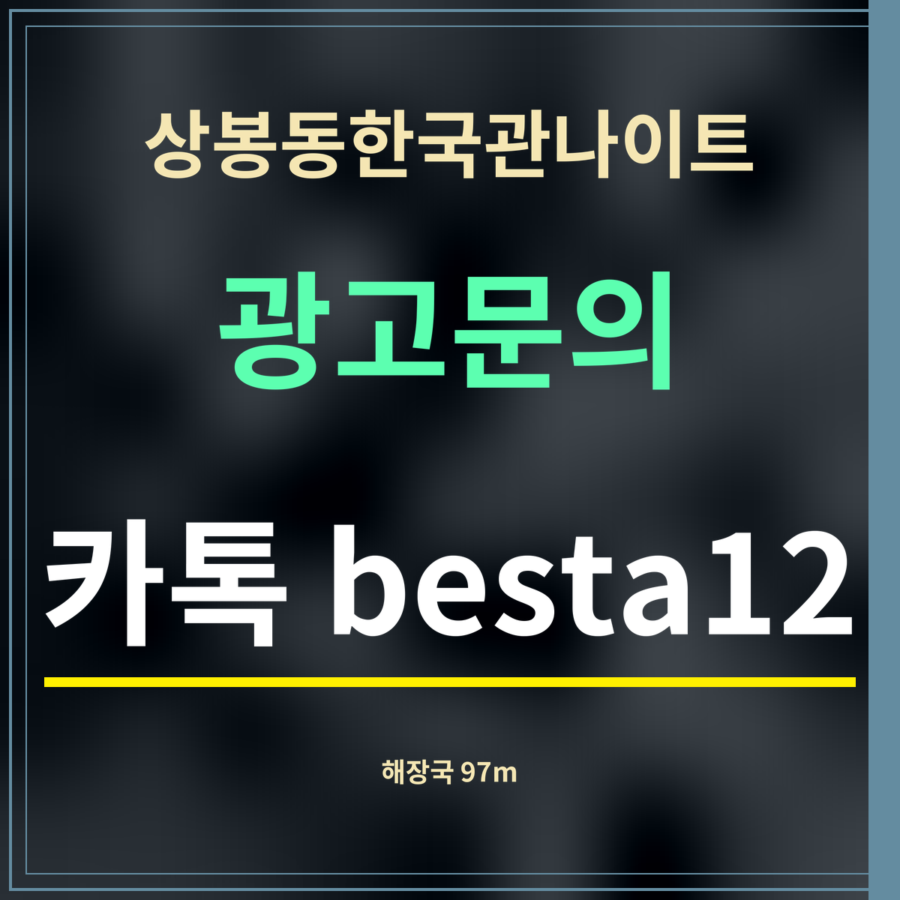

19세 미만 출입 금지
상봉동한국관나이트 다음 날 해장 추천, 97m 국밥부터
제휴 없는 정보 안내 · 국밥·순대국·감자탕집은 카카오맵에 「상봉역 해장국」을 넣어 나온 순서를 거리로 다시 늘어놓았습니다(9월 27일).

요약: 상봉동한국관나이트에서 가장 가까운 곳은 보승회관 상봉점(망우로 319) 97m입니다. 300m 안에 순대국·감자탕집이 두 곳 더 있고, 면목로 쪽으로 가면 선택지가 늘어납니다.
가까운 순서 8곳
| 이름 | 주소 | 분류 | 직선거리 |
|---|---|---|---|
| 보승회관 상봉점 | 망우로 319 | 국밥 | 97m |
| 순대고집 | 면목로 490 | 순대 | 271m |
| 본가감자탕 | 봉우재로33길 40 | 감자탕 | 299m |
| 태능감자탕 상봉역점 | 면목로91길 6 | 태능감자탕 | 365m |
| 할매순대국&양선지해장국 상봉역점 | 면목로 475 | 순대 | 376m |
| 참맛감자탕 본사직영상봉점 | 면목로 465 | 감자탕 | 428m |
| 착한소우거지국밥 | 망우로 279 | 국밥 | 444m |
| 청진동해장국 중화동점 | 동일로 751 | 청진동해장국 | 770m |
메뉴로 나눠 보면
카카오맵 분류를 기준으로 하면 국밥집이 두 곳(보승회관 97m · 착한소우거지국밥 444m), 순대국집이 두 곳(순대고집 271m · 할매순대국&양선지해장국 376m), 감자탕집이 세 곳입니다. 해장국을 이름에 건 곳은 중화동 쪽 청진동해장국(770m)으로 조금 멉니다.
이 가운데 망우로에 붙은 곳은 보승회관과 착한소우거지국밥이고, 나머지는 면목로와 봉우재로 쪽 골목에 있습니다. 영업시간은 목록에 없어, 이른 아침에 여는지는 곳마다 확인해야 합니다. 이름에 「24시」가 붙은 순대국집은 24시 가게 쪽에 따로 적었습니다.
자주 묻는 것
가장 가까운 국밥집은요?
보승회관 상봉점(중랑구 망우로 319)으로 직선 97m입니다.
보승회관 상봉점(중랑구 망우로 319)으로 직선 97m입니다.
감자탕집도 있나요?
본가감자탕(299m), 태능감자탕 상봉역점(365m), 참맛감자탕 본사직영상봉점(428m)이 있습니다.
본가감자탕(299m), 태능감자탕 상봉역점(365m), 참맛감자탕 본사직영상봉점(428m)이 있습니다.
아침에도 여나요?
여는 시각은 목록에 빠져 있어, 이른 아침이라면 지도 앱 상세 화면을 열어 보세요.
여는 시각은 목록에 빠져 있어, 이른 아침이라면 지도 앱 상세 화면을 열어 보세요.
한 줄 정리: 상봉동한국관나이트에서 가장 가까운 해장 한 끼는 97m 보승회관 — 300m 안에 두 곳이 더 있습니다.
국밥 뒤 집에 갈 길은 따릉이 대여소에서도 찾을 수 있습니다.